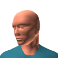
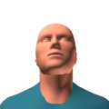
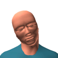

Els posicionadors són sensors que tenen com a missió capturar la posició i/o orientació d'un objecte real i enviar aquesta informació al computador.
Hi ha posicionadors que només enregistren la posició d'un objecte, i per tant se'n diu que mesuren tres graus de llibertat (en anglès, degrees of freedom, DOF). Aquests tres graus són les tres coordenades X, Y, Z de l'objecte respecte un sistema de coordenades conegut que proporciona el posicionador.
D'altres posicionadors només enregistren l'orientació d'un objecte. En aquest cas també tenim tres graus de llibertat, que són els angles de rotació sobre els eixos X, Y i Z. Aquests angles reben noms particulars en realitat virtual, especialment quan mesurem la orientació del cap:
| yaw (azimuth) | Angle de rotació respecte l'eix vertical. Aquest angle varia per exemple quan mirem de dreta a esquerra. |  |
| pitch (elevation) | Angle de rotació respecte un eix horitzontal que uneix les dues orelles. Aquest angle mesura l'elevació respecte l'horitzó, i varia per exemple quan mirem de dalt a baix. |  |
| roll | Angle de rotació respecte l'eix determinat per la direcció de visió. Aquesta angle varia per exemple quan apropem el cap a l'espatlla. |  |
Finalment, la tercera classe de posicionadors proporcionen posició i orientació de l'objecte rastrejat, per la qual cosa s'anomenen posicionadors amb sis graus de llibertat (6 DOF trackers).
L'ús habitual dels posicionadors en realitat virtual és per capturar els moviments del cap del participant, la qual cosa permet generar les imatges d'acord amb el seu punt de vista.
També és freqüent enregistrar els moviments de la mà per permetre a l'usuari interactuar amb els objectes de l'escena de forma natural. Accions com agafar o moure objectes de l'escena es poden realitzar de forma molt més intuïtiva mitjançant un reconeixement dels moviments del participant.
Alguns sistemes immersius fan servir una representació virtual del cos del participant (anomenada avatar) que s'obté mitjançant un conjunt de sensors situats en determinades articulacions clau del participant. En aquest cas, normalment es tria un conjunt reduït d'articulacions i punts clau (com ara peus, turmells, genolls, colzes, espatlles, etc.) a partir dels quals es reconstrueix el cos complet. La fotografia següent mostra un sistema de captura de moviment integral (cortesia de Ascension Technologies):
Aquests sensors també s'utilitzen per enregistrar els moviments de l'usuari en aplicacions que no són de realitat virtual. És el cas de l'anàlisi dels moviments dels esportistes d'alta competició que duen a terme algunes aplicacions usades pels centres d'alt rendiment, així com les seqüències de moviments que es capturen a partir d'un actor real i que s'apliquen a un caràcter virtual. D'aquesta forma, es pot aconseguir que l'actor virtual faci uns moviments molt més complicats i realistes dels que es podrien aconseguir amb altres mètodes. Aquesta tècnica s'utilitza actualment en molts jocs i també en dibuixos animats, com s'aprecia en la següent fotografia (cortesia de Ascension Technologies):
Els posicionadors que es comercialitzen actualment es poden classificar en diferents categories segons la tecnologia que utilitzen: